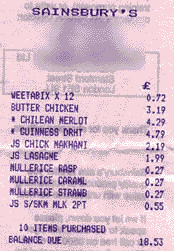

"...then it's back to work
a.g.a.i.n."--- Blur, Bank Holiday, 1994
Nothing much seemed to happen today, at work anyway. It was one of those days. So I went for an extended coffee break with some colleagues. When I returned, I found a project manager, a senior developer, a team leader and one of my peers all waiting for me expectantly. I'd only been gone for a few minutes, what the hell did they want that was so important? Answer - one of them had a twenty-question lyric quiz, on which they needed my assistance! I rattled off about half of the answers, which seemed to please. There you go, I achieved something today. Not sure if I can mention it in my appraisal tomorrow, though.
As of today I've been in the world of work for exactly one year. My spirit has been crushed and broken by this Dilbertian environment already, and I'm only 22. *sigh* Today I've just gazed out of the window a lot and reflected on what a dull year it's been, and how little I seem to have accomplished. The weather outside is changeable - rainy, then misty, then bright sunshine, then heavy rain again in the early evening. The meteorological climate seems to be mirroring the economic one, or vice versa.
Now it's the evening once more, and a bottle of Chilean Merlot and John Peel on the radio are my only salvation once more. Ah, and the great man is playing the title track of the new Belle & Sebastian LP. Life's not so bad, really.